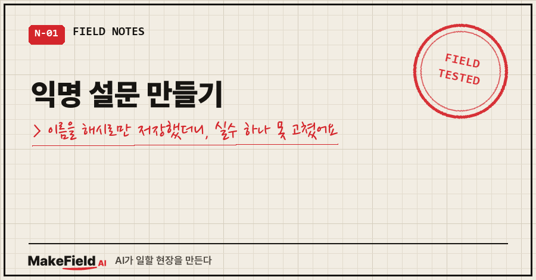
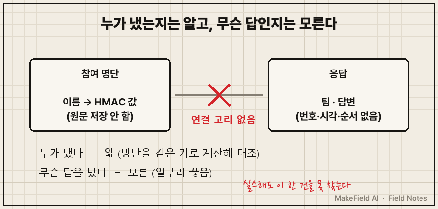
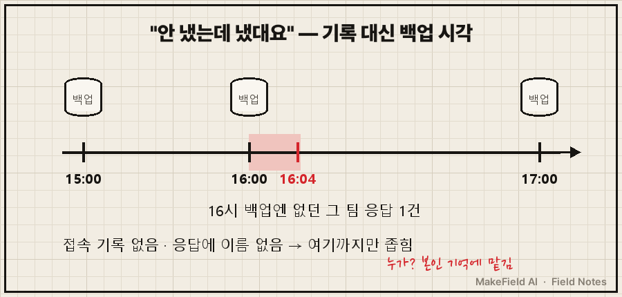
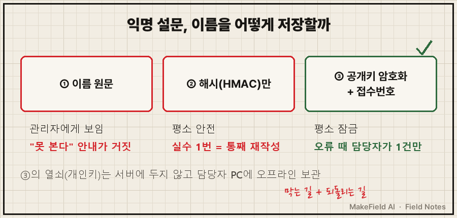

마감 전날 오후 4시쯤, 메시지가 하나 왔어요.
"저 설문 안 했는데, 들어가 보니 이미 제출했다고 떠요."
확인해 줄 방법이 없었습니다.
누가 언제 냈는지, 어떤 답을 냈는지 — 일부러 아무도 알 수 없게 만든 사람이 바로 저였거든요.
익명 설문 만들기에서 이름을 되돌릴 수 없는 해시로만 저장하면, 평소엔 안전하지만 응답자가 실수했을 때 그 한 건만 골라 고칠 방법이 사라집니다. 그래서 다음 설문부터는 "아무도 못 연다"가 아니라 "평소엔 안 열고, 오류가 났을 때만 정해진 한 사람이 연다"로 설계를 바꾸기로 했어요. 2026년 11월, 60명 규모의 사내 설문을 AI랑 직접 만들고 돌리면서 겪은 일입니다.
본업은 제조 설비 제어 쪽이에요. 웹 서비스는 전문이 아니라서, 설문 서버도 AI한테 코드를 맡기고 저는 판단만 했습니다.
1. "관리자도 이름을 못 봅니다"를 진짜로 만들었어요
처음 계획은 단순했어요. 참여 확인 때문에 이름은 받되, 화면에 "관리자도 이름을 볼 수 없어요"라고 적어서 편하게 쓰게 하자.
여기서 AI가 먼저 브레이크를 걸었어요.
말로만 그렇게 적고 실제로는 볼 수 있으면, 그건 안심 문구가 아니라 기만이라는 거죠.
맞는 말이라 구조로 만들었습니다.
- 이름 원문은 저장 안 함 → 비밀 키를 섞은 해시(HMAC) 값만 저장
- 참여 명단과 응답은 다른 표에 저장, 둘을 잇는 공통 번호·제출 시각·저장 순서 없음
- 접속 기록도 끔
- 인원이 한두 명뿐인 직책은 따로 선택지를 안 만들었어요. 1명짜리 선택지는 응답이 곧 그 사람이니까요
HMAC은 RFC 2104에 정의된 "비밀 키를 넣어 계산하는 해시"예요(→ https://www.rfc-editor.org/rfc/rfc2104).
값에서 이름을 거꾸로 꺼낼 수는 없지만, 키를 가진 쪽은 명단의 이름을 같은 방식으로 계산해서 "이 사람이 냈다/안 냈다"까지는 맞춰 볼 수 있어요. 미제출자 추리기는 이걸로 했습니다.
정리하면 누가 냈는지는 알 수 있고, 어떤 답이 누구 건지는 영원히 모르는 구조였어요. 처음엔 이게 완벽해 보였죠.

2. 첫 실수 — 팀을 잘못 고른 한 명을 못 고쳤어요
공지를 돌린 첫날 밤, 첫 문제가 나왔어요.
명단과 대조해 보니 한 분이 소속 팀을 잘못 고르고 제출했더라고요.
그 팀 응답은 두 건이었고, 둘 중 어느 게 그분 건지 알 방법이 없었습니다. 제가 그렇게 만들었으니까요..
AI랑 고른 대안은 이랬어요.
| 방법 | 장점 | 안 고른 이유 |
|---|---|---|
| 본인한테 쓴 문장 앞 몇 글자를 물어 맞추기 | 한 건만 고침 | 본인 기억도 불확실, 엉뚱한 건을 고칠 위험 |
| 그 팀 응답 2건 백업 후 삭제, 두 분 재작성 | 확실함 | 무관한 한 분까지 다시 써야 함 |
결국 두 번째로 갔어요. 백업부터 뜨고 두 건을 지운 뒤, 두 분께 다시 써 달라고 부탁드렸습니다. 응답은 6건에서 4건으로 줄었어요.
그와 함께 같은 일이 또 안 생기게, 명단의 팀과 고른 팀이 다르면 제출 자체를 막았어요. 나중에 못 고치는 구조라면 실수를 입구에서 막는 수밖에 없더라고요.
이 팀 확인 기능을 붙이다가 작은 사고도 하나 있었어요. AI가 서버 코드를 고치는 패치 스크립트 안에서, 자바스크립트 문자열에 넣은 줄바꿈 기호(\n)가 실제 줄바꿈으로 바뀌어 들어가 화면 스크립트에 문법 오류가 났거든요. 아래처럼요(구조만 재구성한 예시예요).
# 의도: alert("팀이 다릅니다\n다시 선택해 주세요")
# 실제 배포된 화면 코드
alert("팀이 다릅니다
다시 선택해 주세요") ← 문자열이 줄에서 끊김 = 문법 오류이건 실제 브라우저를 띄워 눌러 보는 자동 시험(Playwright)에서 잡혔어요. 화면 코드를 고쳤으면 브라우저로 한 번은 눌러 봐야 합니다.
3. 두 번째 — "안 냈는데 냈대요"는 추적이 안 됐어요
다시 그 마감 전날 메시지로 돌아가면요.
명단 해시로 보면 그분 이름은 분명 '제출'이었어요. 그런데 언제, 어떤 답으로 냈는지는 기록이 없죠. 접속 기록도 꺼 뒀고요.
그나마 손에 있던 건 설문 DB를 한 시간마다 떠 둔 백업이었어요.
16시 백업과 지금 DB를 비교해서 "그 사이 그 팀에서 1건이 새로 들어왔다"까지만 좁혔습니다.
본인이 "16시 4분쯤 낸 것 같다"고 기억해 내서 그대로 두기로 했어요.
이번엔 운이 좋았던 거예요. 본인 기억이 흐렸다면 확인할 길이 아예 없었어요.
그때 제가 AI한테 한 말이 이거였어요.
"다음부턴 암호화 하더라도 복호화도 어느정도 좀 해놓자 ㅡㅡ;; 아무리 익명을 요구한다지만.. 이건 뭐 실수하면 바로 빠그러지는 시스템이라"

4. 익명 설문 만들기, 다음엔 이렇게 바꿔요
AI랑 다시 정리한 설계 원칙은 세 가지예요. 아직 다음 설문에 적용하기 전이라 실측 결과는 없습니다.
- 이름과 제출 시각은 공개키로 암호화해서 저장 — 서버엔 공개키만 있어서 서버에서도 관리자 화면에서도 못 풀어요
- 풀 수 있는 개인키는 담당자 PC에만, 오프라인으로 — 오류·분쟁이 생긴 그 한 건만 확인
- 제출 완료 화면에 접수번호와 제출 시각 표시 — "안 냈는데 냈대요"가 오면 본인 화면부터 확인
안내 문구도 사실대로 바꿉니다. "관리자도 볼 수 없어요"가 아니라 "평소엔 아무도 열람하지 않고, 오류 확인이 필요할 때만 담당자가 해당 건을 열어요"로요.

| 저장 방식 | 평소 관리자 열람 | 오류 때 1건 확인 | 남는 부담 |
|---|---|---|---|
| 이름 원문 | 보임 | 됨 | "못 본다" 문구가 거짓 |
| 해시(HMAC)만 | 안 보임 | 안 됨 | 실수하면 통째 재작성 |
| 공개키 암호화 + 접수번호 | 안 보임 | 담당자만 됨 | 개인키 보관 |
이런 질문이 남을 수 있어요
Q. 해시만 저장하면 개인정보 걱정은 없지 않나요?
평소엔 그래요. 다만 키를 가진 쪽은 명단을 같은 방식으로 계산해서 참여 여부는 맞춰 볼 수 있어요. 해시는 '못 본다'가 아니라 '응답과 못 잇는다' 정도로 이해하는 게 정확했습니다.
Q. 복호화를 열어 두면 익명이 깨지는 것 아닌가요?
그래서 열쇠를 서버에서 빼는 거예요. 서버가 털려도 개인키가 없으면 못 풀고, 담당자도 오류가 난 그 건만 엽니다. 대신 그 사실을 안내문에 그대로 적어야 해요.
Q. AI한테 설문을 맡길 때 처음에 뭘 물었어야 했을까요?
"익명으로 만들어 줘" 다음에 "응답자가 실수하면 어떻게 고쳐?"를 한 번 더 물었어야 했어요. 저는 그 질문을 첫 실수가 난 뒤에야 했습니다.
막는 장치는 AI가 금방 만들어 줘요. 되돌리는 길은 사람이 먼저 물어야 생기더라고요.
AI랑 작은 사내 도구를 만들다 깨진 장면들은 makefield.ai에 한 장씩 정리해 두고 있어요.
참고
- RFC 2104 HMAC: Keyed-Hashing for Message Authentication → https://www.rfc-editor.org/rfc/rfc2104
- 실측: 2026년 11월 개인 작업 기록(설문 서버 설계·삭제 2건·백업 대조 과정, 조직·인원·설문 내용 제외)
태그: #익명설문만들기 #익명설문 #설문중복제출 #설문응답수정 #HMAC #해시저장 #공개키암호화 #개인정보최소화 #사내설문 #웹설문만들기 #파이썬설문 #AI코딩 #바이브코딩 #AI오답노트 #MakeFieldAI